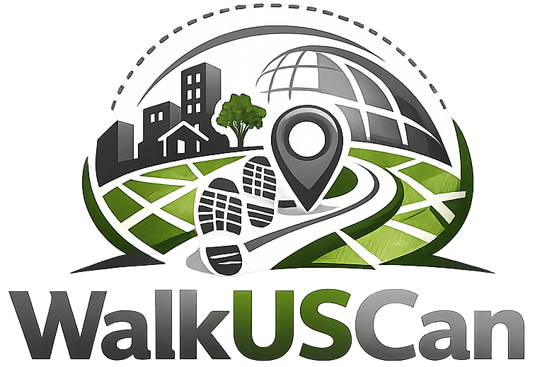
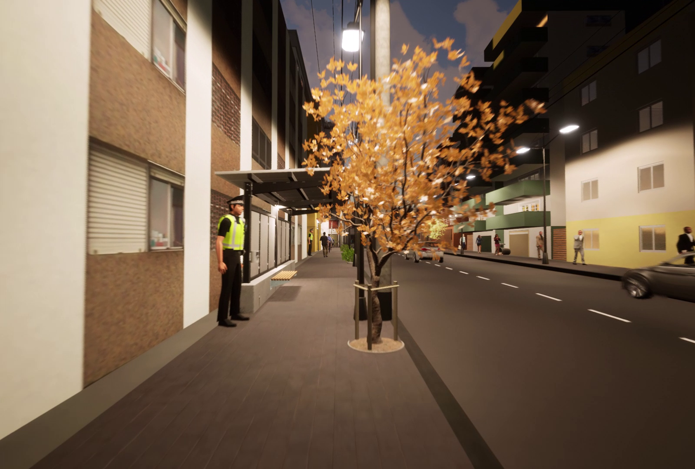
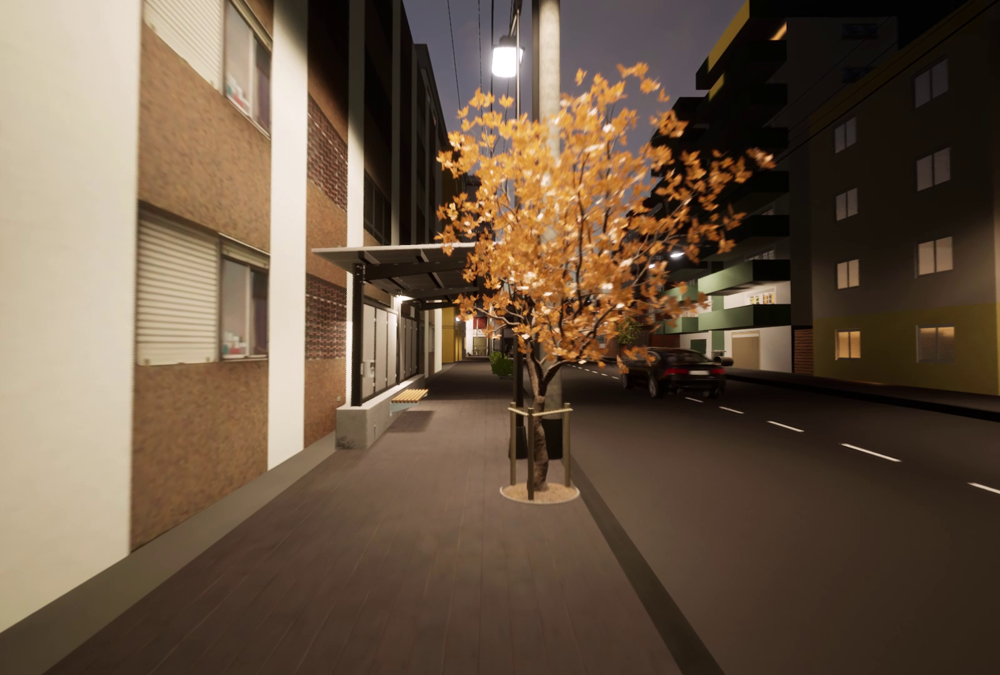

WalkUScan
A Comprehensive Index for Enhancing Pedestrian-Friendly Environments in Latin American Cities
The Challenge: Walking is a Necessity, Not a Choice
For millions of people in Latin American cities, walking isn't just a healthy habit. It is the only way to get to work, school, or the doctor. Unfortunately, those who rely on walking the most often live in neighborhoods with the worst conditions.
Historically, pedestrian needs have not always been included in public policies with the importance they deserve, leaving many to face "invisible barriers" every day: broken sidewalks, lack of lighting, and a constant feeling of being unsafe. We know that the decision to walk isn't just about distance; it’s about how we experience the street. If a path feels dangerous or uncomfortable, it limits a person's access to the city’s opportunities, reinforcing social inequality.

Our Solution: Putting People at the Heart of Urban Design
To build better cities, we can’t just look at maps; we have to listen to the people walking them. Our project fills this gap by creating "people-centered" tools that combine hard urban data with real human stories.
By using innovative technologies, like virtual reality and digital street audits, we capture how sidewalk quality and personal safety perceptions actually affect movement. Our goal is to provide city planners with evidence-based tools to transform our streets. We are working to ensure that walking becomes a safe, dignified, and inclusive right for everyone, regardless of which part of the city they call home.
What makes a city walkable?
Walkability is more than just having sidewalks; it is the measure of how safely, easily, and comfortably a person can navigate their city on foot. In the Latin American context, however, this is often a matter of social justice. While walking is the most common way to move, deep spatial inequalities mean that low-income neighborhoods often face the harshest conditions, with fragmented infrastructure and limited access to urban opportunities compared to wealthier areas.


How do we measure walkability?


Measuring how "walkable" a street goes far beyond counting sidewalks or crosswalks. To truly understand the pedestrian experience in Latin American cities, we look at two sides of the same coin: what we see and what we feel.
On one hand, we analyze the physical environment: the quality of pavement, the presence of trees, and the width of the streets. On the other, we capture the "unseen" factors: a person’s sense of safety, their comfort, and their personal perceptions of the path. By combining these hard facts with real human feelings, we create a complete picture of the urban journey.
To achieve this, we measure street-level features using virtual audits (via Google Street View) and public datasets, allowing us to analyze every street segment with high precision using georeferenced information.
The Science Behind the Index: How is WalkUScan calculated?
WalkUScan was built through perception surveys with residents of three distinct cities: Porto Alegre, Concepción, and Barranquilla.
To understand what truly matters to locals, we asked participants to rank different street attributes and choose between simulated environments in Virtual Reality.
With this data, we were able to assign a specific weight to each attribute, ensuring that the index reflects the actual priorities of those who live in these cities.
Can this methodology be used in other cities?
Yes! We calculated the index for three different cities because we know that local reality shapes how people perceive their surroundings. If you want to assess walkability in your own city, you have two paths:
- Use our Toolkit: You can choose the weights from the city that most closely resembles yours (Porto Alegre, Concepción, or Barranquilla) and simply input your local street-level data into our tool.
- Customize Your Index: We provide our perception survey as an open resource. You can apply it to your local community to calculate personalized weights, creating a walkability index that is 100% tailored to your city's unique cultural and urban context.